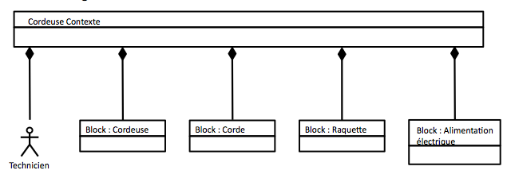
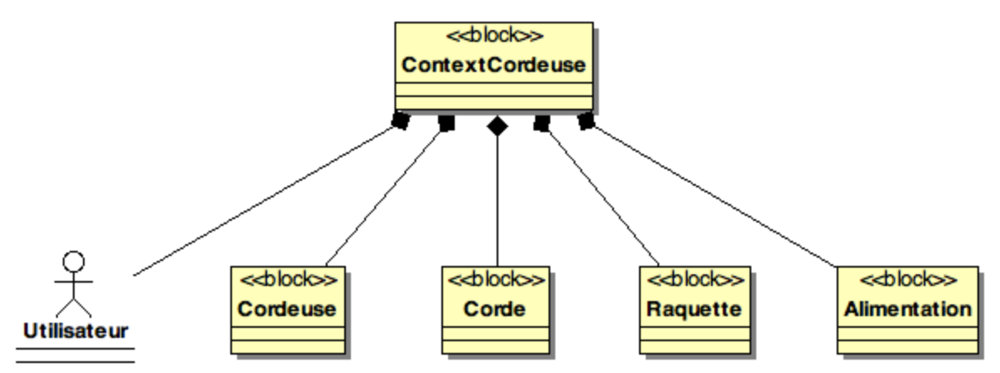
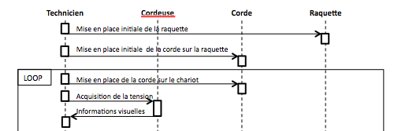
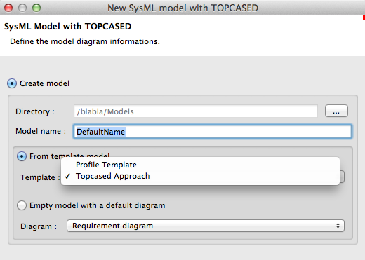
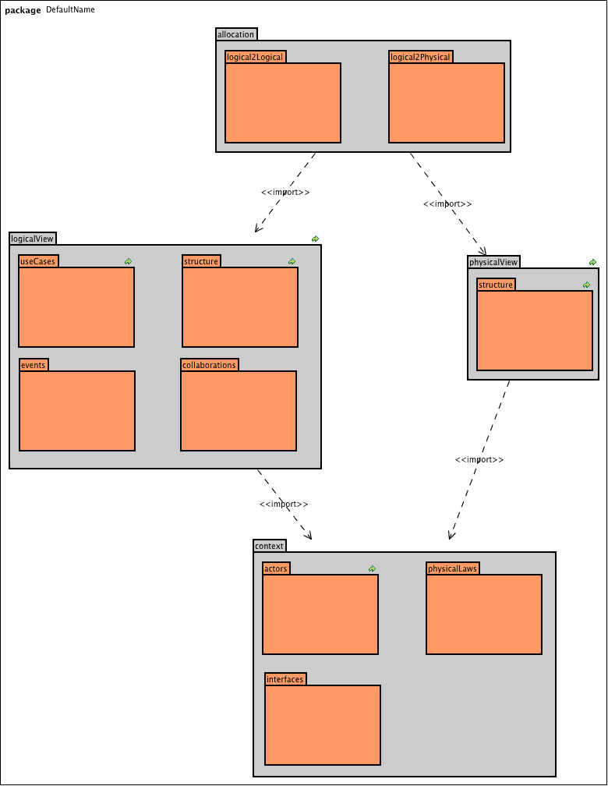

Avant-Propos
Ce site est le résultat de la collaboration des étudiants du Master DL dans ce cours d' ingénierie système (EIINL3AM).
| Site under construction!! |
Conventions
- Niveau de difficulté
-
Les sections qui suivent sont évaluées de facile/débutant () à avancé ()
- Théorie/Pratique
-
Les sections avec l’icône sont plus théoriques (définitions, etc.) que ceux avec l’icône .
- Diagrammes
-
Les figures représentant des modèles UML™/http://www.omgsysml.org/[SysML™] proviennent de différents outils. Pour les identifier j’essaye de les repérer systématiquement par une indication :
Contributeurs
-
Jean-Michel Bruel depuis le 21/09/2016
1. Organisation du module EIINL3AM
| Quoi | Qui | Combien |
|---|---|---|
2h Cours |
||
Cuiller |
Ingénierie des exigences |
12h Cours |
Antoine Perroud & Soutiras |
DOORS |
6h TP |
Jean-Michel Bruel & Chaudet |
10h Cours/TD + 6h TP |
|
Bodeveix & Chaudet |
AADL |
6h Cours/TD + 6h TP |
Lugagne |
Ligne de produit |
2h Cours/TD |
| Liens et coordonnées des intervenants à compléter au fur et à mesure… |
2. Introduction à l'IS
Voici les mots clefs du support de cours de l’an dernier (réalisé par Bernard Cherbonneau) :
Voici la mind map réalisée par les étudiants de la promo 2016 :
2.1. Rendons à César…
Je ne suis que le modeste successeur de Bernard Cherbonneau (responsable du module jusqu’en 2015).
J’ai enlevé Ingénierie et Système qui était sur-représentés bien sûr
(d’au moins un facteur 4 sur le 3ème mot le plus fréquent).
|
2.2. Discipline relativement nouvelle
-
un peu + de dix ans
-
abordée dans des écoles d’ingénieurs (INSA, ISAE, …)
-
spécificité du Master DL à l’UPS
2.3. Intérêt
Pouvoir intégrer :
-
des grands projets (programmes) de type : avion, satellite, suite de logiciels, …
-
des projets faisant intervenir différents métiers : informaticien, chimiste, mécanicien, … où chacun a ses propres habitudes, manières de travailler
2.4. L’Ingénierie Système
-
approche globale
-
démarche méthodologique générale
-
permet, pour un système, de le :
-
définir
-
concevoir
-
faire évoluer
-
vérifier
-
En :
-
apportant une solution économique et performante aux besoins d’un client
-
satisfaisant l’ensemble des parties prenantes
-
cherchant à équilibrer et optimiser l’économie globale de la solution
| Et ce, durant tout le cycle de vie du système : étude, réalisation, déploiement, production/exploitation, retrait, etc. |
2.5. Pour la Maîtrise d’OuvrAge (MOA)
et les parties prenantes qu’elle représente :
-
utilisatrices (directes ou indirectes : pilotes, passagers, personnel naviguant, …)
-
exploitantes
L'[IS] a pour objectif d’assurer l’adéquation de la solution aux besoins sous tous les aspects (fonctionnalité, performances, économie, sécurité) pour toutes les situations d’exploitation (routine, retard, panne).
2.6. Pour la Maîtrise d’OEuvre (MOE)
et les parties prenantes réalisatrices qu’elle représente :
L’IS a pour objectif de conduire à un bon compromis entre :
-
les enjeux
-
les contraintes
sur la solution technique (le produit) et le projet (besoins, attentes, performances, contraintes techniques et industrielles, coûts, délais et risques).
2.7. Le système et sa définition
Un système est une construction qui répond à une finalité dans un environnement.
Changement de "paradigme" entre approche cartésienne et systémique.
…diviser chacune des difficultés que j’examinerais, en autant de parcelles qu’il se pourrait et qu’il serait requis pour les mieux résoudre.
Discours de la Méthode
Le tout est plus que la somme de ses parties.
⇒ en IS, un système sera décrit comme un ensemble d’éléments en interaction entre eux.
En IS, la définition du système comporte :
-
celle de ses sous-systèmes et constituants (matériels, logiciels, organisations et compétences humaines) et de leurs interfaces (sièges des interactions recherchées)
-
celles des processus de leurs cycles de vie
Cette définition induit une démarche descendante d’ingénierie s’appuyant sur une décomposition itérative du système en blocs constitutifs dont elle définit les constituants avec leurs interfaces ainsi que les produits contributeurs à leur cycle de vie.
|
(source https://www.afis.fr)
Cette démarche descendante se combine avec une démarche ascendante à partir de ce que l’on sait ou peut réaliser ainsi que des constituants pré-existants :
|
2.8. Les parties prenantes et l’interdisciplinarité

2.9. La démarche de conception en IS
2.10. La mise en oeuvre de l’IS
2.11. Les enjeux de l’IS
-
meilleure maîtrise de la complexité
-
amélioration de l'adéquation aux besoins
-
meilleure anticipation des problèmes
-
raccourcissement des temps de développement
-
meilleure maîtrise des coûts
-
meilleure transdisciplinarité et coopération
-
accroissement de la satisfaction
-
meilleure optimisation du compromis global enjeux/contraintes
| Autrement dit : une amélioration de la compétitivité des entreprises!! |
2.12. Les domaines d’applications de l’IS
-
Tous les domaines complexes
-
Grande tendance du moment : [MBSE] (Model-Based System Engineering)
3. La notation SysML
3.1. Introduction
La matrice qui nous servira de "carte de base" pour placer les activités ou les modèles, sera celle-ci :
Cette matrice permet de situer les différents éléments qui seront vus dans ce cours dans un cadre utile pour comparer ces éléments les uns aux autres. Je vous conseille de vous faire votre propre matrice. L’essentiel est de toujours bien se représenter les différents éléments qu’on aborde dans une carte mentale précise. Cela permet une meilleure mémorisation.
3.1.1. Points de vue
Dans un axe horizontal, j’ai différencié quatre grands points de vue :
- Exigences
-
Les exigences et leur prises en compte sont un éléments critique pour le succès du développement de tout système. Sans explorer l’ensemble des activités d’ingénierie système (ce qui nécessiterait tout un volume du type de [reqs]) nous insisterons sur cet aspect.
- Structure
-
La description de l’architecture et des éléments constitutifs du système, avec les blocs, leurs relations, organisations internes, etc. constituera un point de vue important. C’est souvent la partie de modélisation qui pose le moins de problème aux débutants.
- Comportement
-
Le comportement d’un système est du point de vue de l’utilisateur final beaucoup plus important que la structure elle-même. C’est la partie qu’il est la plus à même d’exprimer, de comprendre (vos modèles) et de valider.
- Transverse
-
Un certains nombre de concepts sont transverses aux trois points de vue précédents. Il s’agira principalement de parler de cohérence ou de traçabilité entre les phases de développement ou entre les points de vue.
Ces différents points de vue ne doivent pas être confondus avec les différentes phases de développement (cf. paragraphe suivant). Ils sont plutôt à rapprocher de la notion de préoccupation. C’est ainsi que j’ai choisi de distinguer trois points de vue qui se retrouvent souvent en modélisation : le point de vue des exigences qui permet de se focaliser sur les besoins des clients ; le point de vue structurel qui permet de se focaliser sur les différents composants du système ; et le point de vue comportemental qui permet de se focaliser sur le comportement du système. Ces trois points de vue n’étant pas indépendants les uns des autres, j’ai intégré un quatrième point de vue transversal.
3.1.2. Phase de développement
Dans un axe vertical, j’ai différencié quatre grandes phases du cycle de vie du développement :
- Organisation
-
Une étape indépendante du type de cycle de développement envisagé (en V, agile, etc.) mais qui concerne la mise en place d’un cadre de travail qui permette un développement de qualité (outils, éditeurs, gestionnaire de version, de tâches, etc.).
|
On pourrait rapprocher cette étape du "cycle 0" de Scrum. |
- Analyse
-
Cette phase vise plutôt à examiner le domaine du problème. Elle se focalise sur les cahiers des charges et les exigences. L’analyse débouche sur un dossier d’analyse qui décrit les grandes lignes (cas d’utilisation, architecture principale) du système.
- Conception
-
Cette phase vise plutôt à examiner le domaine de la solution. Elle débouche sur un dossier de conception qui décrit les détails conceptuels de la solution envisagée (structure détaillée, comportement, etc.)
- Implémentation
-
Cette phase traite des développements finaux (construction ou approvisionnement en matériel, développement de codes, etc.).
Il s’agit ici classiquement des grandes étapes de développement d’un système. On pourrait être surpris par l’étape que j’ai appelé « organisation ». C’est une étape que je considère importante, particulièrement pour l’enseignement. Avant toute activité de modélisation ou de même de développement, il convient en effet de s’organiser en termes de choix d’outils, choix d’environnement, etc. Cette étape est souvent négligée par les étudiants. C’est pour cela que j’ai décidé de faire figurer cette étape de manière explicite. Bien sûr dans une organisation existante cette étape sera contrainte par les habitudes « maison ».
3.1.3. Questions de révision
Associez les diagrammes suivants avec leurs acronymes (sd, dc, uc, pkg, dss ) :
-
Diagramme de Paquetages
-
Diagramme des Cas d’Utilisation
-
Diagramme de Séquences Système
-
Diagramme de Classes
-
Diagramme de Séquences
Placez dans la matrice ci-dessous les différents diagrammes UML™ que vous connaissez déjà (sd, dc, uc, pkg, dss ).
Éléments de correction :

| Exigences | Structure | Comportement | Transverse | |
|---|---|---|---|---|
Organisation |
|
|||
Analyse |
|
|
|
|
Conception |
|
|
||
Implémentation |
3.2. Pourquoi une nouvelle notation
A good notation has subtlety and suggestiveness which at times makes it almost seem like a live teacher.
The World of Mathematics (1956)
Il existe une notation qui se veut "unifiée" pour les modèles : UML™. Néanmoins cette notation est peu adaptée pour l’Ingénierie Système :
-
UML 1.x était complètement inadaptée :
-
Principalement pour les systèmes d’information
-
Peu de liens entre les diagrammes
-
Peu de liens entre les modèles et les exigences
-
-
UML 2.x n’est pas beaucoup mieux si ce n’est :
-
Implication des ingénieurs systèmes pour sa définition
-
Introduction du diagramme de structure composite
-
En conclusion UML™ est une bonne base :
-
Standard De facto en génie logiciel
-
Fournit beaucoup de concepts utiles pour décrire des systèmes (même complexes)
-
Stable et extensible (grâce notamment au mécanisme de profile)
-
Beaucoup d’outils disponibles
Mais…
-
Manque de certains concepts clés d’Ingénierie Système
-
Vocabulaire beaucoup trop « software » pour être utilisé par les ingénieurs systèmes (concept de classe ou d'héritage par exemple)
-
Trop de diagrammes (13 sortes)
3.3. Introduction à SysML
3.3.1. Fiche d’identité
Voici à quoi pourrait ressembler la fiche d’identité de SysML™ :

3.3.2. Différence avec UML
La figure suivante, tirée de la spécification, résume bien les liens entre SysML™ et UML™, à savoir que SysML™ reprend une partie seulement des concepts d’UML™ (appelée UML4SysML) en y ajoutant des concepts nouveaux.

3.3.3. Qui est "derrière"?
- Industrie
-
American Systems, BAE Systems, Boeing, Deere & Company, EADS Astrium, Eurostep, Israel Aircraft Industries, Lockheed Martin, Motorola, NIST, Northrop Grumman, oose.de, Raytheon, Thales, …
- Vendeurs d’outils
-
Artisan, EmbeddedPlus, Gentleware, IBM, Mentor Graphics, PivotPoint Technology, Sparx Systems, Vitech, …
- Autres organisations
-
AP-233, INCOSE, Georgia Institute of Technology, AFIS, …
|
La liste complète des membres de l’OMG™ est accessible à l’URL : http://www.omg.org/cgi-bin/apps/membersearch.pl |
3.3.4. Organisation des différents diagrammes


|
Définition :
SysML diagram kinds should have the following names or (abbreviations) as part of the heading… |
3.3.5. Différence entre modèle et dessin
SysML™ n’est pas une palette de dessins et d’éléments de base servant à faire des diagrammes. Il existe une représentation graphique des éléments modélisés en SysML™. Elle est importante car elle permet de communiquer visuellement sur le système en développement, mais du point de vue du concepteur, c’est le modèle qui importe le plus.
C’est pourquoi nous vous recommandons de ne jamais "dessiner" des diagrammes SysML™ [1], mais d’utiliser des outils dédiés (cf. Outils SysML). Ils respectent en général la norme OMG SysML v1.3 (bien qu’il faille se méfier).
|
Notez que la norme permet de faire des adaptations graphiques (cf. la discussion http://www.realtimeatwork.com/2011/08/is-sysml-too-abstract/). |
Un des intérêts de la modélisation est de faciliter la communication, notamment au travers des diagrammes et leur aspect graphique et synthétique. Un dessin est donc un plus par rapport à du texte. Néanmoins, il ne faut pas se contenter d’un simple dessin pour au moins deux raisons importantes :
-
un dessin n’est pas assez formel (comment être sûr d’avoir correctement utilisé tel ou tel symbole, cf. les deux exemples ci-dessous) ;
-
il est impossible d’assurer la cohérence globale des modèles dans le cas d’un dessin.
Un modèle est une sorte de base de donnée qui regroupe des éléments issues de différents points de vue (saisis le plus souvent au travers de diagrammes). Un diagramme est une vue partielle du modèle (donc incomplète). Le modèle est la vraie plus value car il va permettre de détecter les incohérences sur les exigences, les problèmes de complétude, lancer des analyses, faire des transformations vers d’autres langages ou formats, etc. Par exemple dans un outil de modélisation il y a une grande différence entre supprimer un élément d’un diagramme (on parlera alors de "masquer" un élément d’un diagramme) et supprimer un élément de modèle (ce qui aura pour effet de supprimer cet élément de tous les diagrammes où il était présent).
Voici deux exemples de non respect de la notation qui illustre le type d’erreur que l’on trouve souvent dans les modèles qui circulent sur Internet ou même parfois dans certains livres.
Diagramme de bloc
Par exemple dans ce diagramme les blocs ne respectent pas la syntaxe graphique de SysML™ :
|
|
Erreur : mauvais symboles graphiques pour les blocs

|
Pour rappel, la notation jmb : Personne permet de représenter un objet (une instance d’une classe ou d’un bloc).
C’est donc une notation utilisée par exemple dans les participants d’un diagramme de séquence ou encore les parties
d’un diagramme interne de bloc.
Donc dans le diagramme ci-dessus, l’acteur est correct (on peut mettre des acteurs dans un bdd, cf. OMG SysML v1.3 p.32), par contre
les objets Block : … est une erreur de notation.
|
|
Solution : utiliser un outil (B)

|
|
Attention, il est tout à fait possible de représenter des instances dans un bdd (cf. OMG SysML v1.3 p.34), même si c’est très peu courant. |
Diagramme de séquence
|
|
Erreur : pb avec les participants et la boucle

|
Plusieurs problèmes de non respect de la notation :
-
il manque le rectangle aux participants
-
les participants semblent être des blocs et non des instances
-
la boucle devrait avoir une condition (même "toujours" pour une boucle infinie)
|
Le dernier problème est plus une convention qu’une véritable erreur. Cf. Conventions. |
3.4. Outils SysML
Il existe un certain nombre d’outils permettant de réaliser des modèles SysML. Voici une liste non exhaustive :
Vous trouverez sur Internet des comparatifs et des avis à jour sur les outils.
Ce que je voudrai souligner ici c’est l’importance du modèle comme "dépôt" (je préfère le terme anglais de repository) d’éléments de base en relation les uns avec les autres. C’est toute la différence entre le dessin et le modèle.
|
Attention toutefois à ne pas confondre ce que vous permet (ou pas) de faire l’outil et la notation elle-même. Les fabricants ont parfois pris des libertés ou bien n’ont pas complètement implémenté toutes les subtilités de la notation. |
3.5. Cadre pour les diagrammes
Abordons quelques principes généraux de SysML™, c’est à dire des éléments indépendant d’un diagramme en particulier :
-
Chaque diagramme SysML™ décrit un élément précis (nommé) de modélisation
-
Chaque diagramme SysML™ doit être représenté à l’intérieur d’un cadre (Diagram Frame)
-
L’entête du cadre, appelé aussi cartouche, indique les informations sur le diagramme :
-
le type de diagramme (
req,act,bdd,ibd,stm, etc. en gras) qui donne immédiatement une indication sur le point de vue porté à l’élément de modélisation (comportement, structure, etc.) -
le type de l’élément (par exemple package, block, activity, etc.), optionnel
-
le nom de l’élément (unique)
-
le nom du diagramme ou de la vue, optionnel
-
Dans l’exemple ci-dessous, le diagramme "Context_Overview" est un Block Definition Diagram (type bdd) qui représente un
package, nommé "Context".

|
|
Convention : Utilisation systématique des cartouches
Tout diagramme proposé pour décrire un système (dans une documentation par exemple) devrait posséder un entête précis. |
Pour ceux qui cherchent à étudier un diagramme en particulier voici un plan de cette section (nous utilisons ici le "plan" vu lors de l’introduction de la Introduction) :
| Exigences | Structure | Comportement | Transverse | |
|---|---|---|---|---|
Organisation |
|
|
|
|
Analyse, Conception, Implémentation [2] |
|
|
|
|
3.6. Organisation
| Exigences | Structure | Comportement | Transverse | |
|---|---|---|---|---|
Organisation |
||||
Analyse |
||||
Conception |
||||
Implémentation |
3.6.1. Fondements
On abordera :
-
Le Package Diagram
-
Les différent types de packages
-
Les organisations possibles
-
La notion de Namespaces
-
Les Dependencies
3.6.2. Le Package Diagram
Le diagramme de paquetage permet de représenter l’organisation des modèles en paquetages.
-
Il est identique à UML™, et classique pour les développeurs (java notamment)
-
Il permet d’organiser les modèles en créant un espace de nommage (cf. La notion de Namespaces)
Les modèles peuvent être organisés selon toutes sortes de considération (cf. Les organisations possibles) :
-
hiérarchie "système" (e.g., entreprise, système, composant)
-
types de diagrammes (e.g., besoins, structure, comportements)
-
par points de vue
-
etc.
3.6.3. Les différent types de packages
Il existe plusieurs types de package :
- models
-
un package "top-level" dans une hiérarchie de packages
- packages
-
le type le plus classique : un ensemble d’éléments de modèles
- model librairies
-
un package prévu pour être réutilisé (importé) par d’autres éléments
- views
-
un package spécial pour représenter les points de vue
|
Un point de vue (viewpoint) est utilisé pour matérialiser une perspective particulière de modélisation.
Il possède des propriétés standardisés (concerns, language, purpose, etc.) et permettent d’indiquer qu’une
vue (un packetage particulier, stéréotypé |
3.6.4. Les organisations possibles
Les modèles peuvent être organisés selon toutes sortes de considération :
-
par hiérarchie "système" (e.g., entreprise, système, composant, …)
-
par types de diagrammes (e.g., besoins, structure, comportements, …)
-
par cycle de vie (e.g., analyse, conception, …)
-
par équipes (e.g., architectes, [IPT], …)
-
par points de vue (e.g., sécurité, performance, …)
-
etc.


|
L’outil TOPCASED propose, lors de la création d’un premier modèle, de créer une organisation "type" par défaut.   |
3.6.5. La notion de Namespaces
Un package permet de créer un espace de nommage pour tous les éléments qu’il contient. Ainsi, dans un package, on n’a pas à se soucier des noms des éléments. Même si d’autres utilisent les mêmes noms, il n’y aura pas ambiguité.
|
|
Définition : Namespace (OMG SysML v1.3, p. 23)
The package defines a namespace for the packageable elements. |
Pour éviter toute ambiguité, on peut utiliser pour les éléments de modèles leur nom complet (Qualified name),
c’est à dire le nom de l’élément préfixé par son (ou ses) package(s)
(e.g., Structure::Products::Clock).
|
Dans les outils SysML™, il faut souvent demander explicitement à voir les noms complets (Qualified names) des éléments (la plupart du temps dans les options graphiques). |
3.6.6. Les dépendances
Un certain nombre de dépendances peuvent exister entre des éléments de package ou entre les packages eux-mêmes :
- Dependency
-
une dépendance "générale", non précisée,
représentée par une simple flèche pointillée-----> - Use
-
l’élément "utilise" celui à l’autre bout de la flèche (un type par exemple),
représentée par le stéréotype<<use>> - Refine
-
l’élément est un raffinage (plus détaillé) de celui à l’autre bout de la flèche,
représentée par le stéréotype<<refine>> - Realization
-
l’élément est une "réalisation" (implémentation) de celui à l’autre bout de la flèche,
représentée par le stéréotype<<realize>> - Allocation
-
l’élément (e.g., une activité ou un requirement) est "alloué" sur celui à l’autre bout de la flèche (un block la plupart du temps),
représentée par le stéréotype<<allocate>>
3.6.7. En résumé
SysML™ propose un certain nombre de mécanismes pour organiser les différents modèles, tirés pour la plupart d’UML™. Ces mécanismes seront plus faciles à comprendre au travers de leur utilisation concrète dans la suite.
| Exigences | Structure | Comportement | Transverse | |
|---|---|---|---|---|
Organisation |
package |
package |
package |
dependencies |
… |
3.6.8. Questions de révision
|
|
|
3.7. Les exigences et SysML
3.7.1. Introduction
L’ingénierie des exigences est d’une importance capitale, surtout en Ingénierie Système. En général les exigences sont exprimées par des ingénieurs dédiés à cette activité. La complexité des systèmes modernes (embarqués, communicants, critiques, …) rendent cruciale cette analyse.
|
Besoins, exigences : question de vocabulaire
La difficulté de l’emploi massif de l’anglais fait qu’il existe souvent une confusion entre les termes anglais et leurs traduction française. Nous précisons donc ici notre utilisation des termes. |
- Requirements
-
Exigences, c’est à dire une fonction ou une propriété que doit satisfaire le système considéré. Par nature une exigence doit pouvoir être vérifiable. En génie logiciel on parle plus classiquement des spécifications ("spec") pour parler des contraintes à respecter pour un système. Les ingénieurs systèmes ont depuis longtemps intégré le terme d’exigences comme traduction directe de requirement.
- Besoins
-
Il s’agit des exigences du client. En UML™ on va plus les retrouver dans les cas d’utilisation. Ils sont à l’origine des requirements tels que définis plus haut.
Il est important pour une exigence qu’elle ne soit pas ambiguë (contrairement au terme "en" dans la consigne exprimée par la maman dans l’illustration ci-dessous : "Ramène moi 1 bouteille de lait. S’il y a des oeufs, ramène m’en 6.").
Dans le cadre de la matrice qui nous sert de plan, nous somme ici :
| Exigences | Structure | Comportement | Transverse | |
|---|---|---|---|---|
Organisation |
||||
Analyse |
||||
Conception |
||||
Implémentation |
3.7.2. Fondements
On abordera :
-
L’organization des Requirements
-
Les Requirements properties
-
Les Requirements links
-
Les Requirements Diagrams
-
Les considérations sur la traçabilité
-
Annotations des Requirements
-
Les Use Case Diagrams
|
L’ingénierie des exigences est une discipline à part entière et nous n’abordons ici que les aspects en lien avec la modélisation. Voir le livre de référence pour plus de détails ([Sommerville1997]) ou le guide de l’https://www.afis.fr ([REQ2012]). |
3.7.3. L’organisation des Requirements
| Exigences | Structure | Comportement | Transverse | |
|---|---|---|---|---|
Organisation |
||||
Analyse |
||||
Conception |
||||
Implémentation |
Il ne s’agit pas ici de revenir sur les exigences elles-même, mais plutôt de voir comment SysML™ permet de les exprimer, de les manipuler et surtout de les lier avec le reste du système.
Représentation de base
Un Requirement en SysML™ n’est qu’un bloc particulier.
|
Définition :
A requirement specifies a capability or condition that must (or should) be satisfied… A requirement is defined as a stereotype of UML Class… |

Différents types d’organisation
L’ingénierie des exigences aboutit généralement à une liste organisée d’exigences, que ce soit en terme de fonctionnelles/non fonctionnelles, de prioritaires/secondaires, etc. Le principal support de SysML™ à cette organisation, outre la possibilité de les annoter (cf. section Stéréotyper les exigences), consiste à utiliser les packages.
Plusieurs types d’organisations sont possibles :
-
Par niveau d’abstraction
-
Besoins généraux (en lien avec les use cases par exemple)
-
Besoins techniques (en lien avec les éléments de conception)
-
-
Par point de vue
-
Besoins principaux (en lien avec les use cases)
-
Besoins spécifiques :
-
Fonctionnels
-
Marketing
-
Environnementaux
-
Business
-
…
-
-
-
etc.
Tableaux de Requirements
Les requirements sont habituellement stockés dans des tableaux (feuilles excel le plus souvent!). Il est donc recommandé par le norme et possible dans de nombreux outils de représenter les exigences sous forme tabulaire.
|
Définition :
The tabular format is used to represent the requirements, their properties and relationships… |

La plupart des outils modernes permettent le passage entre outils classiques de gestion des exigences (comme DOORS™) et outils de modélisation SysML™ (comme Modelio, illustré ci-dessous).
3.7.4. Les Requirements properties
À partir du moment où on commence à définir des propriétés pour les éxigences, on peut considérer que l’on est à la frontière avec la phase d’analyse des exigences.
| Exigences | Structure | Comportement | Transverse | |
|---|---|---|---|---|
Organisation |
||||
Analyse |
||||
Conception |
||||
Implémentation |
Il est possible d’indiquer un certain nombre de propriétés sur un requirement :
-
priority (
high,low, …) -
source (
stakeolder,law,technical, …) -
risk (
high,low, …) -
status (
proposed,approved, …) -
verification method (
analysis,tests, …)
Dans le cadre du module MPA nous ne retiendrons comme attribut d’un requirement que son identifiant et le texte le désignnat (les deux attributs obligatoire). La priorité sera donné par le client en terme de cycle (on traitera en premier les requirements prioritaires).
class ObtenirHoraires <<requirement>> {
Text = "Le logiciel doit fournir les horaires rapidement."
Id = "14.2"
}3.7.5. Les Requirements links
Les principales relations entre requirements sont :
- Containment
-
Pour décrire la décomposition d’une exigence en plusieurs sous-exigences (⊕–). Typiquement dès qu’une exigence est exprimée avec une conjonction "et" ("La voiture doit être rapide et économe.").
- Refinement
-
Pour décrire un ajout de précision (
<<refine>>), comme par exemple une précision. - Derivation
-
Pour indiquer une différence de niveau d’abstraction (
<<deriveReqt>>), par exemple entre un système et un de ses sous-systèmes.
|
Lorsqu’une exigence possède plusieurs cas |

|
Il existe ensuite les relations entre les besoins et les autres éléments de modélisation
(les block ou les class principalement) comme |

3.7.6. Les Requirements Diagrams
Voici un exemple de req un peu plus étoffé, tiré de la norme (voir aussi Exemples de _rationale_ et _problem_ (tiré de <<SysML>>)) :

3.7.7. Stéréotyper les Requirements
Tout comme pour n’importe quel bloc, il est possible de stéréotyper les requirements. Ceci permet de se définir ses propres priorités et classifications. Quelques exemples de stéréotypes utiles :
-
<<interfaceRequirement>>,<<physicalRequirement>>, … -
<<FunctionalRequirement>>,<<nonFunctionalRequirement>>
3.7.8. Annotations des Requirements
Il est possible d’annoter les éléments de modélisation en précisant les raisons (rationale) ou les éventuels problèmes anticipés (problem).

3.7.9. Les considérations sur la traçabilité
Une fois que les requirements ont été définis et organisés, il est utile de les lier au moins aux use cases
(en utilisant <<refine>> par exemple) et aux éléments structurels (en utilisant <<satisfy>> par exemple), mais ceci
sera abordé dans la partie transverse.
|
En général chaque requirement devrait être relié à au moins un use case (et vice-versa!). |
3.7.10. Les Use Case Diagrams
Bien que nous traitions les cas d’utilisation dans la partie comportement, nous les abordons ici du fait de leur proximité avec les requirements.

Ce diagramme est celui que vous avez appris l’an dernier en UML™.

|
Un acteur représente un rôle joué par un utilisateur humain. Il faut donc plutôt raisonner sur les rôles que sur les personnes elles-mêmes pour identifier les acteurs. |
3.7.11. Exigences et tests
Principes
Pour ce qui ce concerne ce module nous allons nous contenter de maintenir des matrices croisant les exigences d’un côté et les tests de l’autre.
Par exemple :
Dans la réalité, les entreprises industrialisent le processus de vérification des exigences en utilisant des outils adaptés :
3.7.12. Exemple complet
En prenant un exemple tiré de l’exemple du Radio Réveil…
Le texte du cahier des charges
Le texte complet de l’exemple ne précise pas le cahier des charges de l’Autoradio (AR), considérant que tout le monde sait ce que c’est!
Rédigeons tout de même quelques extraits (numérotés) de texte possible :
-
L’AR est un dispositif qui permet d’écouter la radio de manière confortable et interactive.
-
L’AR doit être capable de mémoriser un certain nombre de station différentes.
-
L’Utilisateur de l’AR doit pouvoir choisir sa station parmis un choix donné.
-
L’Utilisateur de l’AR doit pouvoir régler le niveau sonore.
-
L’Utilisateur de l’AR doit pouvoir chercher une station en "balayant" les ondes FM.
-
…
Expression des exigences
Nous pouvons, en analysant ce cahier des charges, déduire un certain nombre d’exigences. Nous les écrivons ici sous forme tabulaire, puis en utilisant le langage Gherkin.
Version tabulaire :

Exemple de version textuelle formattée :
#encoding: utf-8
Feature: Scénario simple d'utilisation de l'AutoRadio (AR)
In order to vérifier que le son marche
As an utilisateur lambda
I should be able to exécuter ces scénarios et constater les effets
Scenario: Augmenter le son
Given un AR avec le son à 0
When Je presse le bouton "Volume +"
Then Le son passe à 1
And Je commence à entendre la radioPlan de test
Créer un plan de test consiste à prévoir l’ensemble des tests à l’avance de manière à prévoir la couverture de ces tests.

Analyse et la conception
Dans un cycle classique ("en V" par exemple), les modèles sont réalisés avant l’implémentation (codage).

Dans un cycle Agile, chaque cycle possèdera ses modèles, eux aussi versionnés, qui eux aussi évolueront en même temps que le code.
Lien et traçabilité
Plus encore que dans les méthodes classiques, il conviendra de vérifier que code et modèles sont bien cohérents. On pourra donc :
-
générer les codes à partir des modèles
-
générer les modèles à partir des codes (cf. commentaires)
-
utiliser des outils intégrés comme eclipse
-
avoir un plan systématique de révision code/modèle
-
…
package demo;
class Controller {}
class EmbeddedAgent {}
class PowerManager {}
/**
* @extends Controller
* @extends EmbeddedAgent
* @navassoc - - 1..* PowerManager
* @note this is a note
*/
class SetTopController implements URLStreamHandler {
public String name;
int authorizationLevel;
void startUp() {}
void shutDown() {}
void connect() {}
}
/** @depend - friend - SetTopController */
class ChannelIterator {}
interface URLStreamHandler {
void OpenConnection();
void parseURL();
void setURL();
void toExternalForm();
}
3.7.13. En résumé
Les exigences sont très importantes en ingénierie système, du fait de la multiplication des sous-systèmes et donc des intermédiaires (fournisseurs, sous-traitants, etc.) avec qui les aspects contractuels seront souvent basés sur ces exigences.
Il n’est donc pas étonnant qu’un diagramme et des mécanismes dédiés aient été prévus en SysML™.
| Exigences | Structure | Comportement | Transverse | |
|---|---|---|---|---|
Organisation |
|
|||
Analyse |
|
|
|
|
Conception |
|
|||
Implémentation |
|
En terme de démarche, il est classique d’avoir de nombreux aller-retour entre la modélisation des exigences et la modélisation du système lui-même (cf. Exemple de démarche (_SYSMOD Zigzag pattern_) (tirée de [TestsIndustriels2009])).

3.7.14. Questions de révision
|
|
Questions
|
3.8. L’architecture du système
| Exigences | Structure | Comportement | Transverse | |
|---|---|---|---|---|
Organisation |
||||
Analyse |
||||
Conception |
||||
Implémentation |
3.8.1. Fondements
On abordera :
-
l’organisation du système et des modèles
-
les Block Definition Diagrams
-
les Internal Block Diagrams
-
les Parametric Diagrams (pour les contraintes physiques)
-
les Sequence Diagrams (diagramme de séquence système)
3.8.2. Organisation du système et des modèles
| Exigences | Structure | Comportement | Transverse | |
|---|---|---|---|---|
Organisation |
||||
Analyse |
||||
Conception |
||||
Implémentation |
En terme d’organisation, le mécanisme clef est celui de package. Celui-ci va permettre d’organiser les modèles, pas le système lui-même. Nous avons abordé cette organisation (cf. Le Package Diagram).
Pour l’organisation du système, on trouve le plus souvent :
-
un diagramme décrivant le contexte (le système dans son environnement), décrit dans un block definition diagram (cf. bdd du système dans son environnement)
-
un diagramme décrivant les éléments internes principaux du système, décrit dans un internal block diagram
3.8.3. Block Definition Diagrams
Principes de base
Un bdd peut représenter :
-
un package
-
un bloc
-
un bloc de contrainte (constraint block)
Un diagramme de bloc décrit les relations entre les blocs (compositions, généralisations, …). Ce diagramme utilise les mêmes éléments que le diagramme de classe UML™.
Un bloc est constitué d’un certain nombre de compartiments (Compartments) :
- Properties
-
Equivalent UML™ des propriétés (e.g., attributs).
- Operations
-
Les méthodes supportées par les instances du bloc.
- Constraints
-
Les contraintes (cf. Exemple de définition de contraintes)
- Allocations
-
Les allocations (cf. [transvers])
- Requirements
-
Les exigences liées à ce bloc.
- User defined
-
On peut définir ses propres compartiments.

Propriétés
On peut différencier 4 types de propriétés d’un bloc :
- value properties
-
Des caractéristiques (quantifiables), aussi appelées simplement values
- parts
-
Les éléments qui composent le bloc (cf. Internal Block Diagrams)
- references
-
Les éléments auquel le bloc a accès (via des associations ou des agrégations)
- constraint properties
-
Les contraintes que doivent respecter les propriétés (nous les verrons plus en détail, cf. Parametric Diagrams).
|
Les values sont ce qui se rapproche le plus des attributs de classes UML. |
Value Types
Pour associer un type aux valeurs, SysML™ propose de définir des Value Types.

Associations entre blocs
Il existe deux types de relations entre blocs :
-
l’association (y compris l’agrégation et la composition)
-
la généralisation/spécialisation
Ces deux types de relations, bien connues en UML™, permettent de matérialiser les liens qui existent entre les éléments du système. Avant d’aborder les associations, il est important de différencier la description d’éléments structurels sous la forme d’un bloc (au travers d’un bdd par exemple) et ces éléments pris individuellement. Ces derniers sont des instances individuelles du même bloc. Cette notion, très présente dans les approches orientées objets est souvent plus ardue à appréhender pour les ingénieurs systèmes. Il faut bien comprendre que la modélisation d’un bloc consiste à représenter l’ensemble des éléments qui caractérisent tout une série d’objets (des moteurs, des pompes, des données, etc.). Il serait fastidieux de les représenter tous (individuellement), et c’est donc leur "signature" que l’on représente. C’est pour cela qu’un bloc n’est pas un élément physique, mais simplement sa représentation, tandis qu’une instance de ce bloc représentera elle cet élément physique. C’est le cas notamment des participants d’un diagramme de séquence ou encore des parties d’un composé, qui sont des instances et non des blocs.
Association
Une association est un ensemble de liens permanents existant entre les instances de deux ou plusieurs blocs. On dira qu’une association lie plusieurs blocs ou que les blocs participent à l’association.
Une association possède plusieurs propriétés :
- Dimension d’une association
-
Nombre de blocs mis en jeu par l’association
(binaire : 2, ternaire : 3, n-aire : n)
|
Exemple d’association binaire
Soient les bloc
|

{kind=link}
{kind=link}
- Nom d’une association
-
Afin de clarifier les informations, il est important de nommer les associations.
Il existe trois façons de nommer une association :-
un verbe à l’infinitif (e.g.,
Fournir) -
un verbe conjugué avec un sens de lecture :
Fournit >ou< Est fourni par -
un rôle (placé à une extrémité de l’association)
-
- Cardinalité
-
Indique à combien d’instances minimum et maximum du bloc d’en face est lié toute instance du bloc de départ. Elle est représentée par un couple
(M..N).
|
Attention, dans une cardinalité |

Vers le code : que signifie vraiment une association?
En terme de logiciel, une association représente une contrainte sur la suite du développement : que ce soit un code (en langage orienté objet la plupart du temps) ou une base de donnée.
Pour reprendre l’exemple précédent, cela signifie concrètement au niveau d’un code par exemple
que depuis une variable Produits on doit être capable d’accéder à une variable (correspondante)
de type tableau (ou liste, ou …) de Fournisseurs.
Ce qui peut donner en java :
public class Produits
{
//Produits Attributes
private String idPro;
private String designation;
private float poids;
//Produits Associations
private List<Fournisseurs> fournisseurs;
...En terme d’ingénierie système, on utilisera plutôt des associations spécifiques (l’agrégation et la composition).

BEn terme d’Ingénierie Système, une composition indique que l’élément est une partie intégrante (on parle de part) du tout (un composant, comme le moteur d’une voiture par exemple) tandis q’une agrégation indique que l’élément est une partie "externe" (on parle de reference) comme la batterie d’un portable.
|
Un moyen simple en terme logiciel de déterminer si une association
|

Généralisation/Spécialisation
Lorsque plusieurs blocs ont des caractéristiques en communs (propriétés, associations, comportement), il peut être utile de "factoriser" ces éléments en un bloc dont les autres vont "hériter". Quand on réalise ces liens hiérarchiques (on utilise souvent le terme "est un") en partant des blocs différents pour établir un nouveau bloc contenant les points communs on parle de généralisation. À l’inverse, quand on constate qu’un bloc possède réellement plusieurs déclinaisons différentes et que l’on créé alors des blocs spécifiques, on parle alors de spécialisation.

On retrouve cette association entre blocs, mais aussi entre acteurs, cas d’utilisation, etc.
3.8.4. Internal Block Diagrams
Un ibd décrit la structure interne d’un bloc sous forme de :
- parts
-
Les parties qui constituent le système (ses sous-systèmes)
- ports
-
Elément d’interaction avec un bloc
- connecteurs
-
Liens entre ports
Parts
Les parties sont représentés par les éléments au bout d’une composition dans un bdd.
Elles sont créés à la création du bloc qui les contient et sont détruites avec lui s’il est détruit (dépendance de vie).
|
Il ne s’agit pas de redessiner le BDD. Les parts sont des instances et non des classes (au sens objet). |
On représente les parts comme des bloc en traits pleins et les references comme des blocs en trait pointillés.


Ports (SysML 1.2)
|
La version OMG SysML v1.3 de la spécification préconise l’abandon des ports tels que définis dans la version 1.2. Nous présentons les nouvelles notions dans la section qui suit. Néanmoins, de par l’importance des exemples qui utilisent les notions habituelles de ports, et vu que tous les outils ne supportent pas encore les nouveaux ports, nous indiquons ici leur définition et recommandons pour l’instant de les utiliser. |
Les ports :
-
préservent l’encapsulation du bloc
-
matérialise le fait que les interactions avec l’extérieur (via un port) sont transmise à une partie (via un connecteur)
-
les ports connectés doivent correspondre (kind, type, direction, etc.)
|
Les ports définissent les points d’interaction offerts ( |

|
|
Définition : Ports (OMG SysML v1.3, p. 57)
Ports are points at which external entities can connect to and interact with a block in different or more limited ways than connecting directly to the block itself. |

Les ports peuvent être de nature classique (comme en UML™) et représenter la fourniture ou le besoin de services. On parle alors de *standard flows*.
Ils peuvent aussi être de nature "flux physique", on parle de *flow ports*.
Les Flux peuvent être :
-
atomiques (un seul flux),
-
composites (agrégation de flux de natures différentes).
|
Un flow port atomique ne spécifie qu’un seul type de flux en entrée ou en sortie (ou les deux), la direction étant simplement indiquée par une flèche à l’intérieur du carré représentant le port. Il peut être typé par un bloc ou un Value Type représentant le type d’élément pouvant circuler en entrée ou en sortie du port. |
Ports (depuis SysML 1.3)
La spécification OMG SysML v1.3 introduit les concepts de:
- proxy port
-
Ils doivent remplacer les ports 1.2 (ports de flots et ports standards) en en reprenant les caractéristiques et en ajoutant la possibilité d’imbrication et de spécification renforcée.
- full port
-
En fait il s’agit du même concept qu’une partie qui serait exposée à l’extérieur.
|
Pour une discussion sur les différences entre les deux ports : http://model-based-systems-engineering.com/2013/09/23/sysml-full-ports-versus-proxy-ports/ |
3.8.5. Parametric Diagrams
Afin de capturer de manière précise les contraintes entre valeurs, ou encore les liens entre les sorties et les entrées d’un bloc, SysML™ utilise trois concepts clefs :
-
Constraints (un type de bloc)
-
Parametric diagram (un
ibdparticulier) -
Value binding
Contraintes
C’est un bloc particulier :
-
avec un stéréotype
≪constraint≫(au lieu de bloc) -
des paramètres en guise d’attributs
-
des relations liant (contraignant) ces paramètres
|
|
Définition : ConstraintBlock (OMG SysML v1.3, p. 86)
A constraint block is a block that packages the statement of a constraint so it may be applied in a reusable way to constrain properties of other blocks. |
Diagramme paramétrique
C’est une forme particulière de Internal Block Definition

Value Binding
Une fois les contraintes exprimées, il faut lier les paramètres (formels) à des valeurs (paramètre réel). C’est l’objet des Value Binding.
Pour assigner des valeurs spécifiques, on utilise des Block Configurations;

3.8.6. Diagrammes de séquence système
Les diagrammes de séquence système (DSS) sont des Sequence Diagrams UML™ classiques où seul le système est représenté comme une boîte noire en interaction avec son environnement (les utilisateurs généralement).
Il permet de décrire les scénarios des cas d’utilisation sans entrer dans les détails. Il convient donc mieux à l’ingénierie système qu’un diagramme de séquence classique (cf. section sur les [seq]).

3.8.7. En résumé
En résumé, il existe plusieurs diagrammes permettant d’exprimer la structure du système à concevoir. En fonction du niveau de détail nécessaire on peut voir les sous-systèmes comme des boîtes noires (des blocs) ou comme des boîtes blanches (grâce à l'`ibd` correspondant).
| Exigences | Structure | Comportement | Transverse | |
|---|---|---|---|---|
Organisation |
|
|||
Analyse |
|
|||
Conception |
|
|||
Implémentation |
|
3.8.8. Questions de révision
|
|
|
4. TP SysML
Nous allons utiliser dans ce TP l’outil Papyrus version 1.1.2.
Vous allez devoir utiliser cet outil pour écrire les modèles travaillés en cours/TD.
La version récente de Papyrus est la 2.0.1, qui devrait
parfaitement fonctionner, mais nous indiquons ici la version que nous avons
utilisé et dont sont issues les éventuelles captures d’écran et instructions.
|
4.1. Contexte

Les spécifications initiales du système sont ici :
-
Fichier excel des exigences initiales
4.2. Outillage
Vérifiez que vous possédez bien sur votre machine : Papyrus 1.1.2
(ou une version supérieure).
| Si vous souhaitez installer Papyrus, suivez le guide d’installation du site de Papyrus. |
Vous allez devoir travailler en mode collaboratif. Suivez les instructions qui se trouvent sur le dépôt GitHub : https://github.com/IUT-Blagnac/M2DL2015.git.
| Vérifiez la présence de EGit et de EMFCompare sur votre Eclipse. |
4.2.1. Let’s start
Vous travaillerez de préférence en binôme.
-
Choisissez dans la liste des sous-sytèmes que nous avons listé ici celui qui vous inspire (et qui est encore libre). Si vous trouvez une autre idée, n’hésitez pas à valider auprès de nous.
-
Ouvrez un nouveau projet (en pensant à le définir du type
SysML) -
Ajoutez votre propre organisation (en utilisant les
packagescomme vu en cours) si besoin ()

4.2.2. Avant d’aller trop loin dans les diagrammes
-
Faites valider votre organisation (par l’enseignant)
-
Travaillez un document-type pour votre rapport (qui servira d’évaluation à votre projet).
|
Vous pouvez tester la génération automatique de documents, mais n’attendez pas le dernier moment si vous vous lancez dans cette aventure! |
4.3. Contexte du système à modéliser
- Définition
-
La MIB est un appartement permettant la supervision de patient à domicile.
Les informations concernant le cahier des charges sont disponibles ici : http://mi.iut-blagnac.fr/.
4.4. Exigences
Nous avons travaillé aux exigences en TD. Elles sont ici.
4.5. Evaluation
4.5.1. Questions
-
Organisez vos futurs modèles en paquetages (peut être fait plus tard) et trouvez où vous "rattacher" dans le modèle actuel
-
Réalisez si cela s’y prette un diagramme des exigences (
req) du sous-système que vous traitez -
Réalisez le diagramme des cas d’utilisation (
uc) du sous-système -
Réalisez un ou plusieurs diagrammes de blocks (
bdd) de votre sous-système -
Réalisez un ou plusieurs diagrammes internes de blocks (
ibd) correspondants -
Réalisez un ou plusieurs diagrammes comportementaux :
-
d’états (
st) par exemple pour représenter le cycle de vie du sous-système, -
de séquences par exemple pour le scénario opérationnel nominal du sous-système dans son contexte
-
-
Pensez à tracer les liens entre exigences et comportement ou entre exigences et blocs et à bien sûr relier vos élements à l’ensemble.
|
4.5.2. Delivrables attendus
Vous déposerez avant le 08/01/2016 à minuit sur le dépôt moodle votre rapport
final au format .pdf.
Vous vous assurerez d’avoir mis à jour (push) votre branche dans le dépôt GitHub.
|
Votre rapport devra s’appeler De même vos branches git devront commencer par vos noms (et non vos id) suivis
d’un terme permettant de comprendre ce que vous traitez (par exemple
|
4.5.3. Evaluation et critères
Les principaux critères qui guideront la notation seront :
-
clarté des diagrammes et des choix de conception ou d’interprétation réalisés
-
cohérence entre les diagrammes
L’évaluation portera principalement sur les critères suivants :
| Critère | Type de critère | Poids approximatif |
|---|---|---|
Sommaire / Introduction |
Présence |
10% |
Diagramme des Use Cases |
Correction, pertinence |
10% |
Diagramme des Requirements |
Correction, pertinence |
10% |
Diagramme Comportementaux |
Correction, pertinence |
20% |
Diagramme de Définition de Blocks (au moins un) |
Correction, pertinence |
10% |
Diagramme de Interne de Blocks (au moins un) |
Correction, pertinence |
10% |
Cohérence inter-modèles (bdd/seq, bdd/ibd) |
Correction, pertinence |
10% |
Clarté – Présentation du Dossier |
subjectif :-) |
20% |
| En cas de besoin, n’hésitez pas à nous contacter (bruel@irit.fr ou christelle.chaudet@irit.fr). |
4.6. About…
Document generated with Asciidoctor 1.5.5 from Dan Allen by Jean-Michel Bruel & Christelle Chaudet.
 licence Creative Commons Paternité - Partage à l'Identique 3.0 non transposé.
licence Creative Commons Paternité - Partage à l'Identique 3.0 non transposé.
5. Liens utiles
-
Généralités
-
Organismes
-
AFIS
-
INCOSE
-
6. FAQ
Dans ce qui suit, les logos qui accompagnent les réponses aux questions signifient :
-
 ⇒ réponse validée par le prof
⇒ réponse validée par le prof -
 ⇒ réponse avec référence/citation
⇒ réponse avec référence/citation -
 ⇒ réponse non validée
⇒ réponse non validée
6.1. Qui compose l’AFIS ?
Qui sont les gens qui adhèrent et pilotent l'[AFIS]?
|
Réponse (source https://www.afis.fr/SitePages/AFIS%20et%20IS.aspx)
Les membres sont des personnes individuelles (principalement des ingénieurs), des institutions (comme l’ENAC), des grandes entreprises (Airbus, Thalès, …), des consultants, etc. Le pilotage est collégial avec des membres élus, des commissions diverses et des responsables thématiques. |
7. Glossaire et définition
| Ces définitions seront enrichies au fur et à mesure du cours. |
- [AFIS]
-
Association Française d'Ingénierie Système (https://www.afis.fr)
- [CMMI]
-
CMMI
- [IEEE]
-
IEEE
- [INCOSE]
-
INCOSE
- [IS]
-
Ingénierie Système (abbréviation)
- [MOA]
-
MOA
- [MOE]
-
MOE
Contributions welcome!
N’hésitez pas à contribuer au projet qui héberge ce site (https://github.com/jmbruel/masterDL2016) en lisant ces consignes.
Document réalisé par Jean-Michel Bruel via http://asciidoctor.org/
(version 1.5.5) from Dan Alen. Licence Creative Commons.
 licence Creative Commons Paternité - Partage à l'Identique 4.0 non transposé.
licence Creative Commons Paternité - Partage à l'Identique 4.0 non transposé.